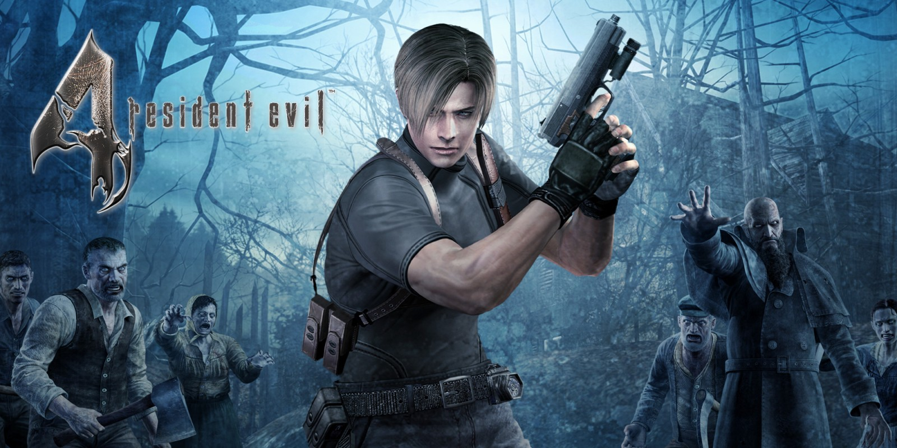

Red Dead Redemption 2

Red Dead Redemption II è un gioco d'avventura e azione in prima e terza persona ambientato in un open world a tema western. Il giocatore impersona Arthur Morgan, un fuorilegge appartenente alla banda Van der Linde. Il videogioco dispone di un comparto giocatore singolo e multigiocatore. La vita di Arthur Morgan ruoterà attorno alla vita della propria gang,[11] comunità viva e in costante mutamento. Come i suoi compagni il protagonista dovrà provvedere al sostentamento del gruppo, contribuendo alle provvigioni dell'accampamento e alle casse della banda. La qualità e l'operato dei suoi servizi muterà il comportamento dei membri della gang nei suoi confronti, ma non cambierà l'esito finale dell'avventura. Oltre alle missioni principali, l'open world di RDR 2 conta numerosissime missioni secondarie e incontri fortuiti.
Resident evil 4
Resident Evil 4, conosciuto in Giappone come Biohazard 4, è un videogioco a tema survival horror focalizzato principalmente sull'azione, pubblicato e sviluppato da Capcom. Il gioco è ambientato nell'autunno del 2004. Leon Scott Kennedy, ex poliziotto sopravvissuto all'incidente di Raccoon City di sei anni prima, è ora un agente governativo incaricato di indagare sul rapimento di Ashley Graham, figlia del presidente degli Stati Uniti d'America. I servizi segreti credono che il sequestro della ragazza sia avvenuto a causa di una fuga di informazioni riservate, che sono state fatte trapelare ai rapitori da un traditore dell'entourage governativo. Secondo l'intelligence, Ashley è stata deportata in Spagna, nei pressi del villaggio rurale di Valdelobos. Tuttavia, temendo una trappola, i servizi segreti decidono di inviare sul posto un solo agente, incaricato di confermare ogni sospetto in attesa di disposizioni: la scelta ricade su Leon Scott Kennedy, agente speciale del presidente.
Fable Anniversary
Fable è una serie di videogiochi action-RPG ideati da Peter Molyneux, sviluppati da Lionhead Studios (Playground Games per il reboot)e pubblicati da Microsoft Game Studios. La serie è stata una delle prime, in ambito videoludico, a cercare di offrire al giocatore il libero arbitrio del proprio personaggio, lasciandogli decidere se compiere azioni positive o negative e avere ripercussioni sulla vita sociale, la reputazione e l'estetica;[3] è stata anche una delle prime a supportare i diritti LGBT: il giocatore può infatti scegliere se vestirsi da uomo o donna e avere relazioni omosessuali.[4] Il primo capitolo della serie era originariamente pianificato per Dreamcast, ma a causa del prematuro declino della console è stato pubblicato su Xbox. La storia racconta delle antiche terre di Albion, il pacifico villaggio di Oakvale viene attaccato da un gruppo di banditi. Uno dei pochi sopravvissuti è un ragazzo senza nome (il giocatore) che ha perso il padre Brom, la madre Scarlatta e la sorella Theresa. Viene salvato da un eroe di nome Dedalo. Costui porta il ragazzo alla Gilda degli Eroi, una potentissima organizzazione che ha sede in un enorme monastero, patria di tutti coloro che inseguono la fama e la gloria.
Heavy Rain
Heavy Rain è un videogioco d'avventura sviluppato dallo studio francese Quantic Dream. L'inizio del gioco ci apre la visuale sulla vita di quello che è uno dei protagonisti del gioco: Ethan Mars. La vita di Ethan è molto felice e solare assieme a sua moglie Grace e i suoi due figli Jason e Shaun. Un giorno, mentre sono al centro commerciale, Grace decide di comprare un paio di scarpe a Shaun e quindi lascia Jason e Ethan da soli. Il figlio si allontana recandosi verso un venditore di palloncini e il padre, raggiungendolo, gliene compra uno rosso. Subito dopo Jason sparisce di nuovo fra la folla del centro commerciale. Ethan lo ritrova fuori dal centro commerciale, dall'altra parte della strada. Mentre Jason sta attraversando, il padre si accorge che sta per essere investito da un'auto e si butta per salvarlo. Purtroppo il tentativo è inutile, il figlio muore sul colpo e Ethan rimane in coma.
GTA San Andreas
Grand Theft Auto: San Andreas, noto anche come GTA: San Andreas o semplicemente San Andreas, è un videogioco action-adventure del 2004, sviluppato da Rockstar North e pubblicato da Rockstar Games. Grand Theft Auto: San Andreas ha venduto circa 27,5 milioni di copie al settembre del 2011 arrivando ad essere il 26° più venduto in assoluto. La storia racconta di Carl Johnson, detto "CJ", un delinquente di strada afroamericano, membro della Grove Street Family, una gang delle periferie della città di Los Santos. Nel 1987 il fratello minore Brian rimase ucciso in uno scontro tra bande e a Carl venne additata parte della responsabilità dell'accaduto. Sentendosi ostracizzato e accusato dalla sua stessa famiglia e dalla sua gang, Carl decise quindi di abbandonare la città e si trasferisce a Liberty City, dove trascorre cinque anni vivendo di piccole rapine. Nel 1992, la madre Beverly viene uccisa in un agguato dal gruppo dei Ballas, gang rivale della Grove Street Family e CJ decide di far ritorno a casa per partecipare ai funerali.